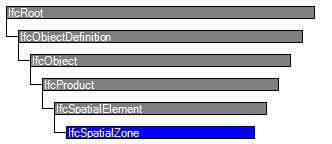

| Räumliche Zone |
 | Spatial Zone |
 | Zone spatiale |
| Item | SPF | XML | Change | Description | 4.0.0.0 |
|---|---|---|---|---|
| IfcSpatialZone | ADDED |
A spatial zone is a non-hierarchical and potentially overlapping decomposition of the project under some functional consideration. A spatial zone might be used to represent a thermal zone, a construction zone, a lighting zone, a usable area zone. A spatial zone might have its independent placement and shape representation.
The IfcSpatialZone inherits and declares these attributes that shall have the following meaning:
Physical elements that are referenced by this spatial zone are related using the IfcRelReferencedInSpatialStructure relationship as it is a non-hierarchical assignment in addition to the hierarchical spatial containment within a subtype of IfcSpatialStructureElement. Also spaces, that referenced by this spatial zone are related using the IfcRelReferencedInSpatialStructure relationship. The IfcSpatialZone itself can also be referenced by another spatial element using IfcRelReferencedInSpatialStructure.
NOTE The IfcSpatialZone is different to the IfcZone entity by allowing an own placement and shape representation, whereas IfcZone is only a grouping of IfcSpace's.
HISTORY New entity in IFC4.
| # | Attribute | Type | Cardinality | Description | R |
|---|---|---|---|---|---|
| 9 | PredefinedType | IfcSpatialZoneTypeEnum | ? | Predefined types to define the particular type of the spatial zone. There may be property set definitions available for each predefined type. | X |
| Rule | Description |
|---|---|
| CorrectPredefinedType | Either the PredefinedType attribute is unset (e.g. because an IfcSpatialZoneType is associated), or the inherited attribute ObjectType shall be provided, if the PredefinedType is set to USERDEFINED. |
| CorrectTypeAssigned | Either there is no spatial zone type object associated, then the IsTypedBy inverse relationship is not provided, or the associated type object has to be of type IfcSpatialZoneType. |

| # | Attribute | Type | Cardinality | Description | R |
|---|---|---|---|---|---|
| IfcRoot | |||||
| 1 | GlobalId | IfcGloballyUniqueId | Assignment of a globally unique identifier within the entire software world. | X | |
| 2 | OwnerHistory | IfcOwnerHistory | ? |
Assignment of the information about the current ownership of that object, including owning actor, application, local identification and information captured about the recent changes of the object,
NOTE only the last modification in stored - either as addition, deletion or modification. IFC4 CHANGE The attribute has been changed to be OPTIONAL. | X |
| 3 | Name | IfcLabel | ? | Optional name for use by the participating software systems or users. For some subtypes of IfcRoot the insertion of the Name attribute may be required. This would be enforced by a where rule. | X |
| 4 | Description | IfcText | ? | Optional description, provided for exchanging informative comments. | X |
| IfcObjectDefinition | |||||
| HasAssignments | IfcRelAssigns @RelatedObjects | S[0:?] | Reference to the relationship objects, that assign (by an association relationship) other subtypes of IfcObject to this object instance. Examples are the association to products, processes, controls, resources or groups. | X | |
| Nests | IfcRelNests @RelatedObjects | S[0:1] | References to the decomposition relationship being a nesting. It determines that this object definition is a part within an ordered whole/part decomposition relationship. An object occurrence or type can only be part of a single decomposition (to allow hierarchical strutures only).
IFC4 CHANGE The inverse attribute datatype has been added and separated from Decomposes defined at IfcObjectDefinition. | ||
| IsNestedBy | IfcRelNests @RelatingObject | S[0:?] | References to the decomposition relationship being a nesting. It determines that this object definition is the whole within an ordered whole/part decomposition relationship. An object or object type can be nested by several other objects (occurrences or types).
IFC4 CHANGE The inverse attribute datatype has been added and separated from IsDecomposedBy defined at IfcObjectDefinition. | X | |
| HasContext | IfcRelDeclares @RelatedDefinitions | S[0:1] | References to the context providing context information such as project unit or representation context. It should only be asserted for the uppermost non-spatial object.
IFC4 CHANGE The inverse attribute datatype has been added. | ||
| IsDecomposedBy | IfcRelAggregates @RelatingObject | S[0:?] | References to the decomposition relationship being an aggregation. It determines that this object definition is whole within an unordered whole/part decomposition relationship. An object definitions can be aggregated by several other objects (occurrences or parts).
IFC4 CHANGE The inverse attribute datatype has been changed from the supertype IfcRelDecomposes to subtype IfcRelAggregates. | X | |
| Decomposes | IfcRelAggregates @RelatedObjects | S[0:1] | References to the decomposition relationship being an aggregation. It determines that this object definition is a part within an unordered whole/part decomposition relationship. An object definitions can only be part of a single decomposition (to allow hierarchical strutures only).
IFC4 CHANGE The inverse attribute datatype has been changed from the supertype IfcRelDecomposes to subtype IfcRelAggregates. | X | |
| HasAssociations | IfcRelAssociates @RelatedObjects | S[0:?] | Reference to the relationship objects, that associates external references or other resource definitions to the object.. Examples are the association to library, documentation or classification. | X | |
| IfcObject | |||||
| 5 | ObjectType | IfcLabel | ? |
The type denotes a particular type that indicates the object further. The use has to be established at the level of instantiable subtypes. In particular it holds the user defined type, if the enumeration of the attribute PredefinedType is set to USERDEFINED.
| X |
| IsTypedBy | IfcRelDefinesByType @RelatedObjects | S[0:1] | Set of relationships to the object type that provides the type definitions for this object occurrence. The then associated IfcTypeObject, or its subtypes, contains the specific information (or type, or style), that is common to all instances of IfcObject, or its subtypes, referring to the same type.
IFC4 CHANGE New inverse relationship, the link to IfcRelDefinesByType had previously be included in the inverse relationship IfcRelDefines. Change made with upward compatibility for file based exchange. | X | |
| IsDefinedBy | IfcRelDefinesByProperties @RelatedObjects | S[0:?] | Set of relationships to property set definitions attached to this object. Those statically or dynamically defined properties contain alphanumeric information content that further defines the object.
IFC4 CHANGE The data type has been changed from IfcRelDefines to IfcRelDefinesByProperties with upward compatibility for file based exchange. | X | |
| IfcProduct | |||||
| 6 | ObjectPlacement | IfcObjectPlacement | ? | Placement of the product in space, the placement can either be absolute (relative to the world coordinate system), relative (relative to the object placement of another product), or constraint (e.g. relative to grid axes). It is determined by the various subtypes of IfcObjectPlacement, which includes the axis placement information to determine the transformation for the object coordinate system. | X |
| 7 | Representation | IfcProductRepresentation | ? | Reference to the representations of the product, being either a representation (IfcProductRepresentation) or as a special case a shape representations (IfcProductDefinitionShape). The product definition shape provides for multiple geometric representations of the shape property of the object within the same object coordinate system, defined by the object placement. | X |
| IfcSpatialElement | |||||
| 8 | LongName | IfcLabel | ? |
Long name for a spatial structure element, used for informal purposes. It should be used, if available, in conjunction with the inherited Name attribute.
NOTE In many scenarios the Name attribute refers to the short name or number of a spacial element, and the LongName refers to the full descriptive name. | X |
| ContainsElements | IfcRelContainedInSpatialStructure @RelatingStructure | S[0:?] | Set of spatial containment relationships, that holds those elements, which are contained within this element of the project spatial structure.
NOTE The spatial containment relationship, established by IfcRelContainedInSpatialStructure, is required to be an hierarchical relationship, where each element can only be assigned to 0 or 1 spatial structure element. | X | |
| ServicedBySystems | IfcRelServicesBuildings @RelatedBuildings | S[0:?] | Set of relationships to systems, that provides a certain service to the spatial element for which it is defined. The relationship is handled by the objectified relationship IfcRelServicesBuildings.
IFC4 CHANGE The inverse attribute has been promoted to the new supertype IfcSpatialElement with upward compatibility for file based exchange. | X | |
| IfcSpatialZone | |||||
| 9 | PredefinedType | IfcSpatialZoneTypeEnum | ? | Predefined types to define the particular type of the spatial zone. There may be property set definitions available for each predefined type. | X |
Property Sets for Objects
The Property Sets for Objects concept template applies to this entity as shown in Table 43.
| |||||||||||||
Table 43 — IfcSpatialZone Property Sets for Objects |
Spatial Zone Attributes
The Spatial Zone Attributes concept applies to this entity.
Object Typing
The Object Typing concept template applies to this entity as shown in Table 44.
| ||||
Table 44 — IfcSpatialZone Object Typing |
Product Local Placement
The Product Local Placement concept applies to this entity.
Spatial Composition
The Spatial Composition concept applies to this entity.
Spatial Decomposition
The Spatial Decomposition concept applies to this entity.
Spatial Container
The Spatial Container concept applies to this entity.
<?xml version="1.0"?>
<ConceptRoot xmlns:xsi="http://www.w3.org/2001/XMLSchema-instance" xmlns:xsd="http://www.w3.org/2001/XMLSchema" uuid="c10bdb79-0b90-42dc-9ff4-c918a605ef5d" name="IfcSpatialZone" status="sample" applicableRootEntity="IfcSpatialZone">
<Applicability uuid="00000000-0000-0000-0000-000000000000" status="sample">
<Template ref="442262e3-0e0f-476d-bd10-31f6be168f5b" />
<TemplateRules operator="and" />
</Applicability>
<Concepts>
<Concept uuid="e8a320e2-4ad6-416b-975d-46110d169b9e" name="Property Sets for Objects" status="sample" override="false">
<Template ref="f74255a6-0c0e-4f31-84ad-24981db62461" />
<TemplateRules operator="and">
<TemplateRule Parameters="PsetName=Pset_SpatialZoneCommon;" />
</TemplateRules>
</Concept>
<Concept uuid="8dbc0e09-1e54-441c-bfdb-9b68680da4d8" name="Spatial Zone Attributes" status="sample" override="false">
<Template ref="0541525d-d527-4edc-a326-e82c23c30c7d" />
</Concept>
<Concept uuid="702402da-2431-41f4-9eaa-001d53154f9a" name="Object Typing" status="sample" override="false">
<Template ref="35a2e10e-20df-40f4-ab2f-dacf0a6744f4" />
<TemplateRules operator="and">
<TemplateRule Parameters="RelatingType=IfcSpatialZoneType;" />
</TemplateRules>
</Concept>
<Concept uuid="b9986eb0-c34d-4c4e-be2e-cd9e035c57d5" name="Product Local Placement" status="sample" override="false">
<Template ref="cbe85b5f-7912-4a43-8bb7-1e63bf40b26d" />
</Concept>
<Concept uuid="38b73d1a-f412-4ceb-a893-c14bbaf59d72" name="Spatial Composition" status="sample" override="false">
<Template ref="8c0fd2f7-71bb-4e6e-8fdb-0c02b352f14a" />
</Concept>
<Concept uuid="8289e647-2095-4fb2-9084-29bd95ec2a67" name="Spatial Decomposition" status="sample" override="false">
<Template ref="667f8443-ecce-4a8d-a63f-931fab0453e0" />
</Concept>
<Concept uuid="3f9784cb-257b-4ad1-ac5e-57677f6ac068" name="Spatial Container" status="sample" override="false">
<Template ref="61dd08ed-fd01-4955-9337-8afd284a0e6f" />
</Concept>
</Concepts>
</ConceptRoot>
| # | Concept | Template | Model View |
|---|---|---|---|
| IfcRoot | |||
| Identity | Software Identity | Reference View | |
| Revision Control | Revision Control | Reference View | |
| IfcObjectDefinition | |||
| Classification | Classification | Reference View | |
| IfcObject | |||
| Object User Identity | Object User Identity | Reference View | |
| Object Predefined Type | Object Predefined Type | Reference View | |
| Property Sets for Objects | Property Sets with Override | Reference View | |
| IfcSpatialElement | |||
| Spatial Element Type Predefined Type | Spatial Element Type Predefined Type | Reference View | |
| IfcSpatialZone | |||
| Property Sets for Objects | Property Sets for Objects | Reference View | |
| Spatial Zone Attributes | Spatial Zone Attributes | Reference View | |
| Object Typing | Object Typing | Reference View | |
| Product Local Placement | Product Local Placement | Reference View | |
| Spatial Composition | Spatial Composition | Reference View | |
| Spatial Decomposition | Spatial Decomposition | Reference View | |
| Spatial Container | Spatial Container | Reference View | |
<xs:element name="IfcSpatialZone" type="ifc:IfcSpatialZone" substitutionGroup="ifc:IfcSpatialElement" nillable="true"/>
<xs:complexType name="IfcSpatialZone">
<xs:complexContent>
<xs:extension base="ifc:IfcSpatialElement">
<xs:attribute name="PredefinedType" type="ifc:IfcSpatialZoneTypeEnum" use="optional"/>
</xs:extension>
</xs:complexContent>
</xs:complexType>
ENTITY IfcSpatialZone
SUBTYPE OF (IfcSpatialElement);
PredefinedType : OPTIONAL IfcSpatialZoneTypeEnum;
WHERE
CorrectPredefinedType : NOT(EXISTS(PredefinedType)) OR
(PredefinedType <> IfcSpatialZoneTypeEnum.USERDEFINED) OR
((PredefinedType = IfcSpatialZoneTypeEnum.USERDEFINED) AND EXISTS (SELF\IfcObject.ObjectType));
CorrectTypeAssigned : (SIZEOF(IsTypedBy) = 0) OR
('IFCPRODUCTEXTENSION.IfcSpatialZoneType' IN TYPEOF(SELF\IfcObject.IsTypedBy[1].RelatingType));
END_ENTITY;
 Instance diagram
Instance diagram Link to this page
Link to this page